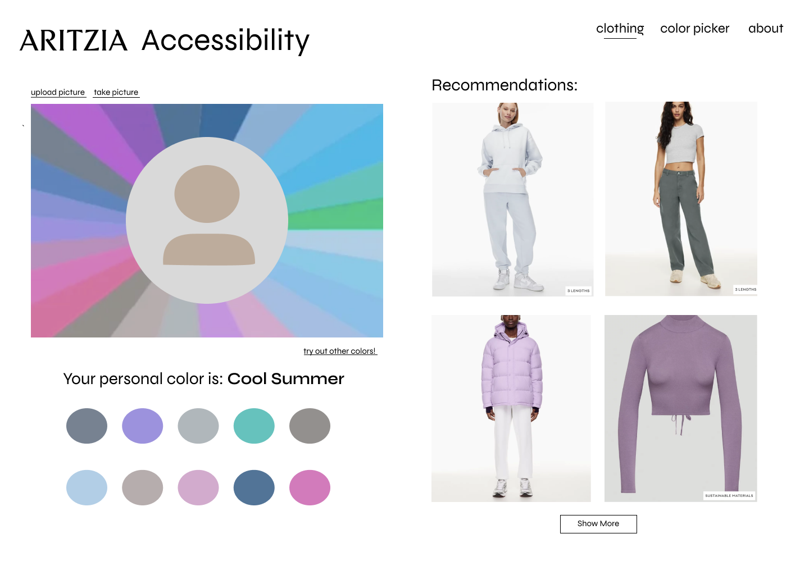
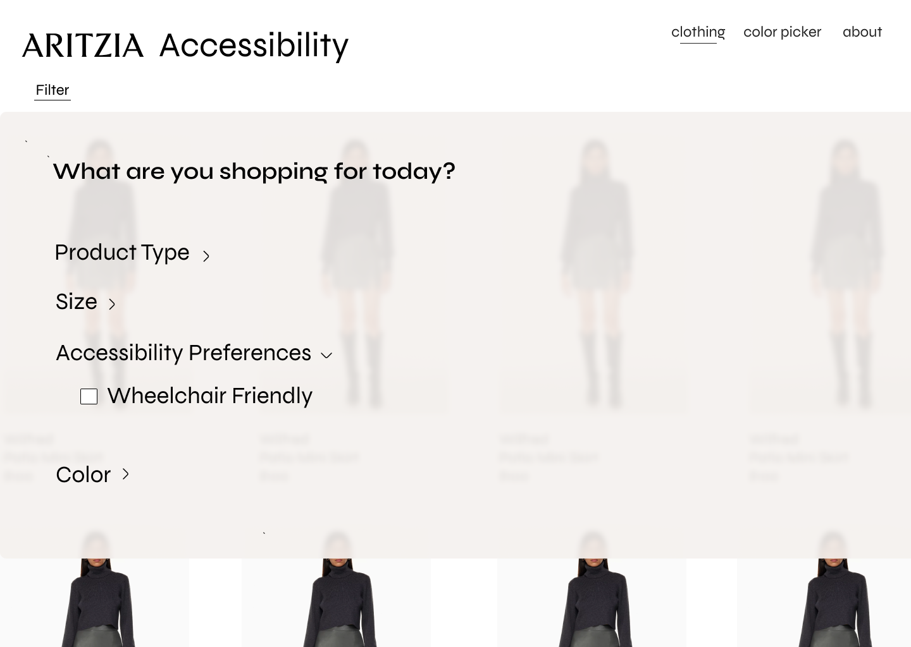
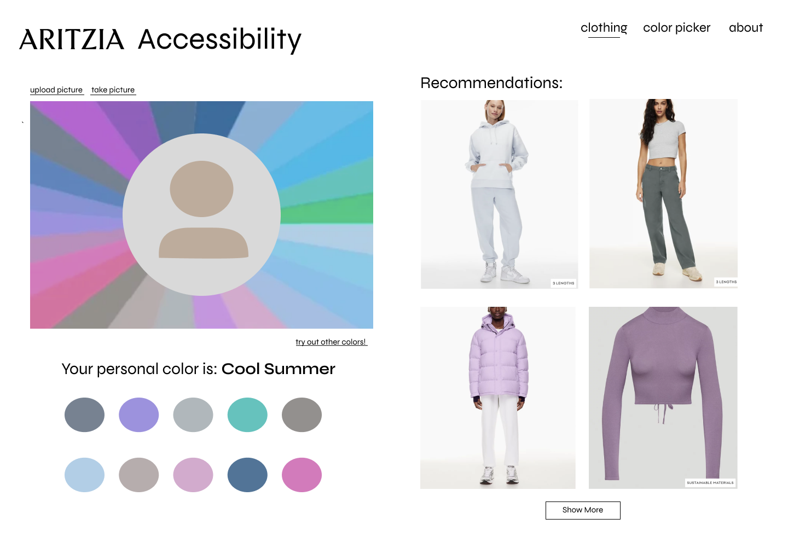
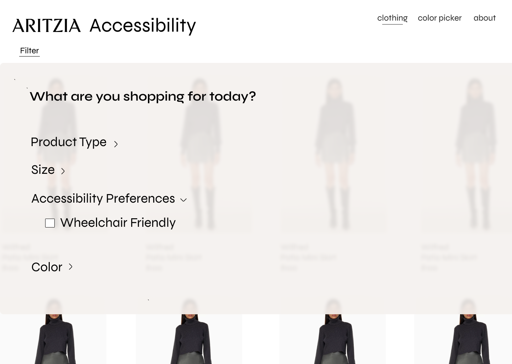

| skills | timeline |
| ux design | 24 hours |
| web development | |
| business thinking |
- summary
- An app utilizing accessibility and other personalized features to improve the e-commerce experience. It filters clothes that are wheelchair-friendly and creates a personal color palette.
- background -
- This project was made for UBC's girlCode hackathon, where we had 24 hours to come up with a product that can be used to forward the fashion-tech industry that addressed the case problem through the lens of Aritzia. Other members of my team included other UBC students. This product was awarded Best Beginner Hack and Most Creative Hack.
- problem -
- We were presented with the following case problem: How can we use technology to personalize fashion-retail while enhancing the e-commerce experience?
- We identified that online shopping can often be a difficult experience for people with disabilities. Due to time constraints, we specifically focused on wheelchair users and their difficulties with easily finding fashionable, wheelchair-friendly clothing. Additionally, the lack of personalization in e-commerce can make the experience frustrating compared to shopping in stores where you can interact with style advisors.
high fidelity prototype

 


